What are the App UX Experience Standards?
An excellent app experience comes from good UX design. HarmonyOS App UX Experience Standards define the requirements an app must meet across the dimensions that affect user experience. An app must meet all mandatory requirements below before it can be published in the app marketplace. Carefully check every aspect of the app during design and development.
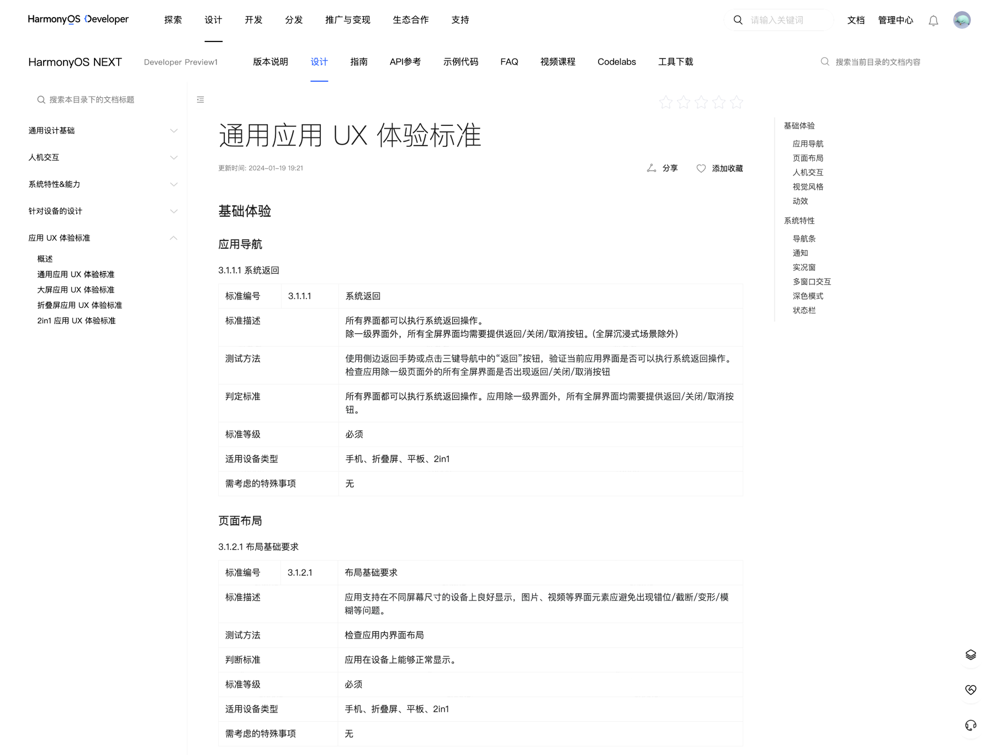
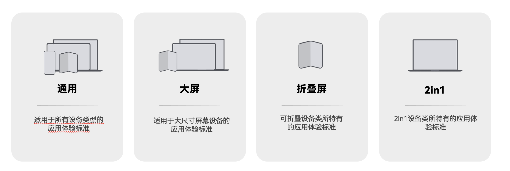
System Back
All pages must support the system back operation. Except for top-level pages, every full-screen page must provide a back, close, or cancel button (except full-screen immersive scenarios).
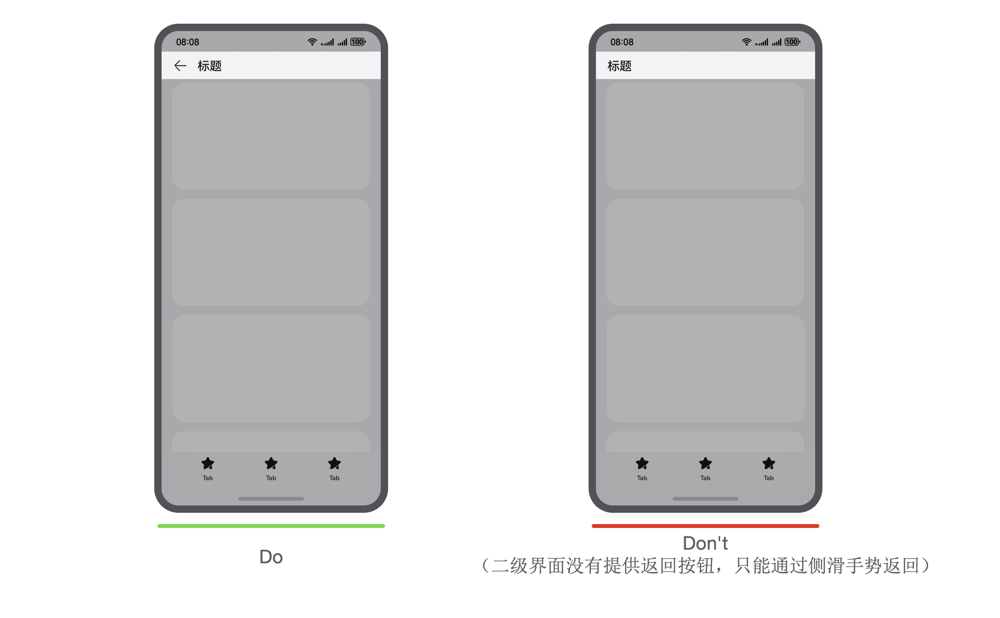
Basic Layout Requirements
The app must display properly on devices with different screen sizes. UI elements such as images and videos must not be misaligned, clipped, or distorted.
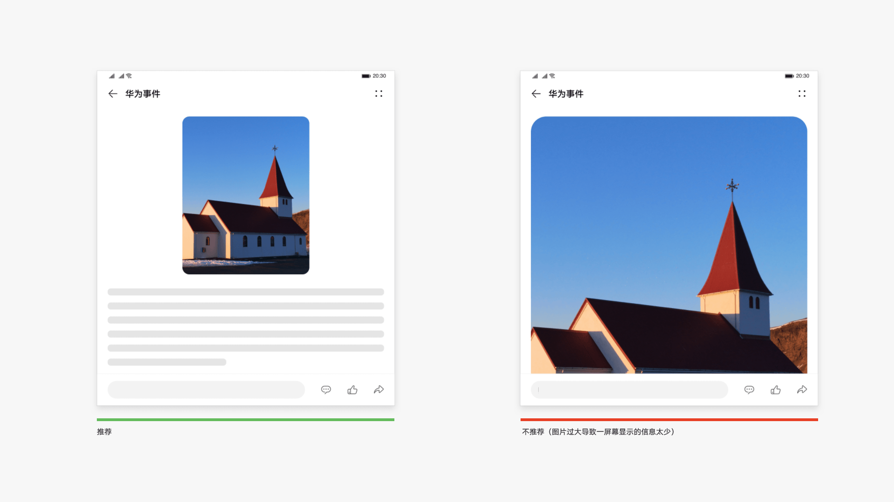
Camera-Cutout Adaptation
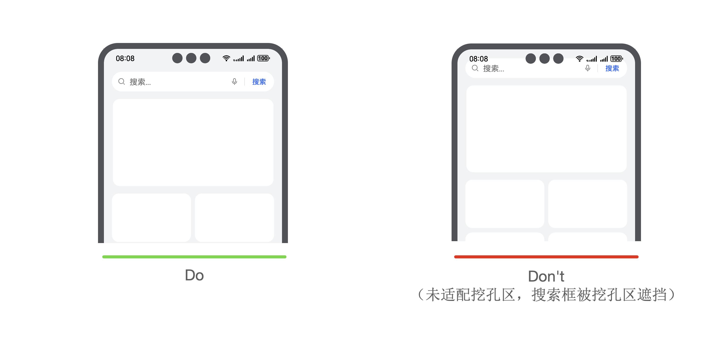
Avoid Conflicts with System Gestures
Gestures used by the app must not conflict with system gestures. Do not design gestures that may conflict with system gestures, such as edge gestures, knuckle gestures, or three-finger-and-above gestures.
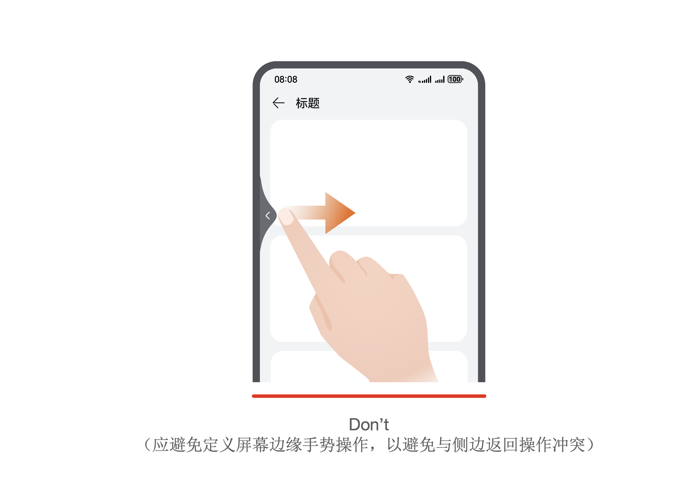
Typical Gesture Duration
Typical gestures used by the app must meet the following parameter constraints:
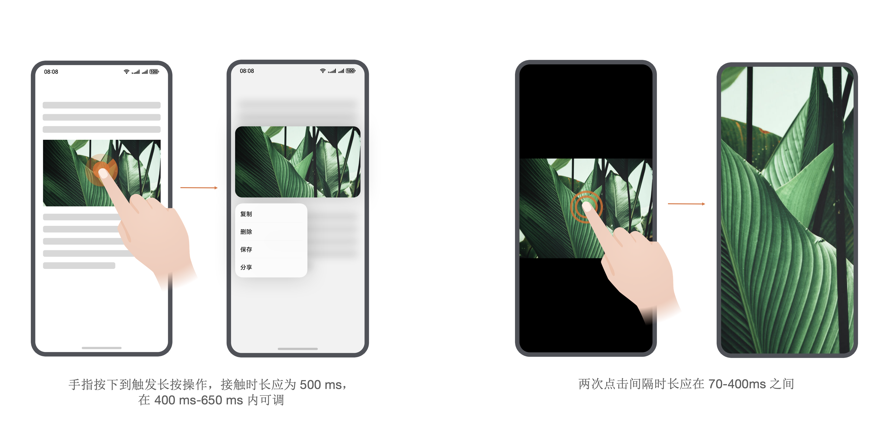
Tap Target Area
Tap target areas must meet minimum size requirements: the target area of a primary interactive element or control should be at least 48 vp x 48 vp (recommended) and must not be smaller than 40 vp x 40 vp (required).
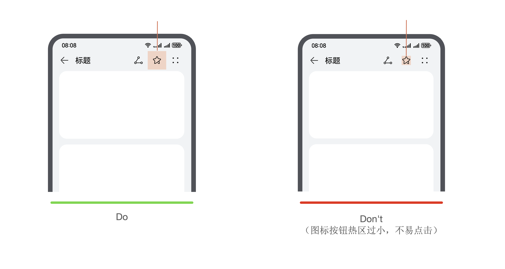
Color Contrast
Colors used by the app must meet the minimum contrast requirements:
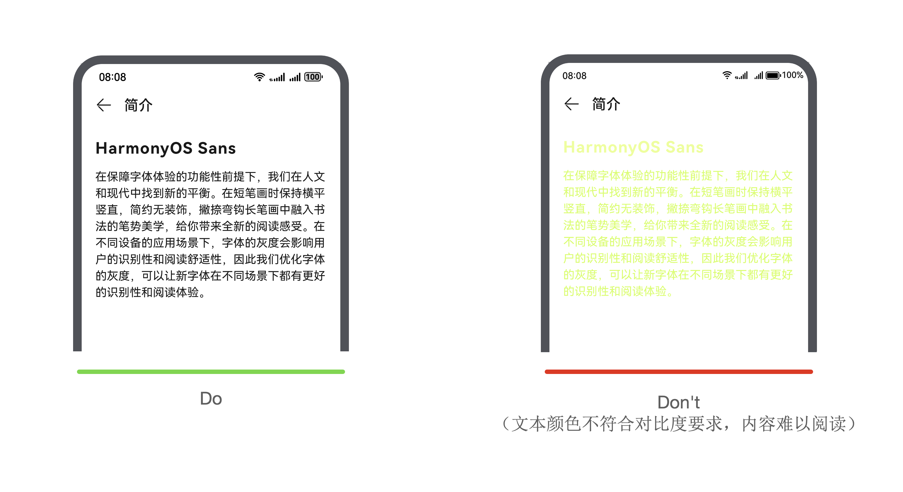
Font Size
Text in the app must meet minimum size requirements: text should be at least 12 fp (recommended) and must not be smaller than 8 fp (required).
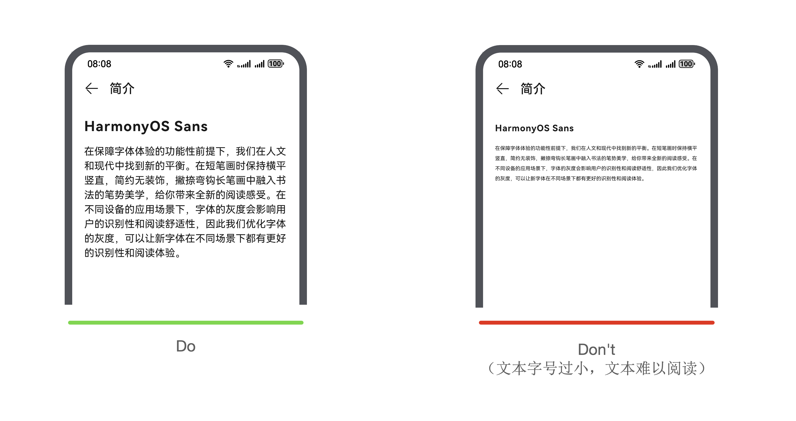
App Icon
App icons must be layered and meet the required dimensions: an app icon consists of foreground and background layers, each 288 px x 288 px, with a default visible area of 192 px x 192 px.
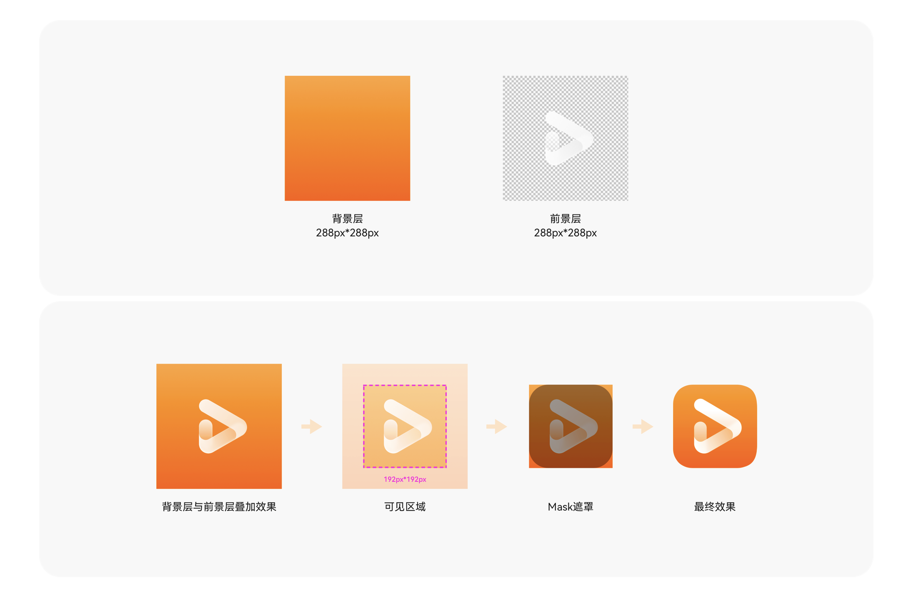
UI Icon
UI icons in the app must meet minimum size requirements: icons should be at least 12 vp (recommended) and must not be smaller than 8 vp (required).
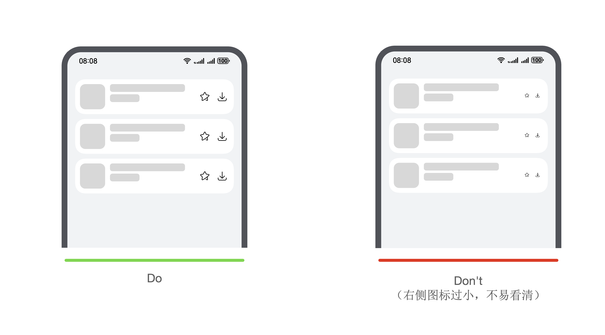
Icon Clarity
Icons must be clear and legible, without obvious blurring, stretching, compression, or jagged edges.
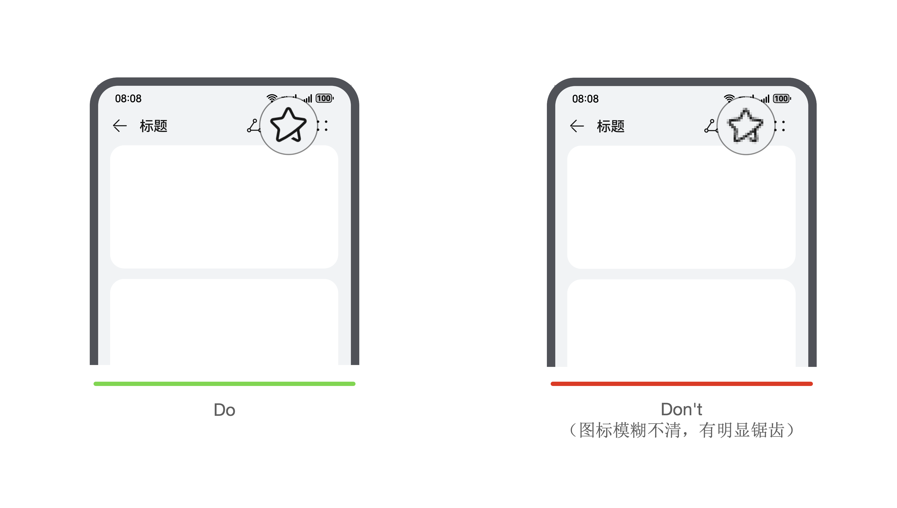
Bottom Navigation Bar Adaptation
Phones, foldables, tablets, and other devices have a navigation bar at the bottom of the screen. Apps must adapt to it:
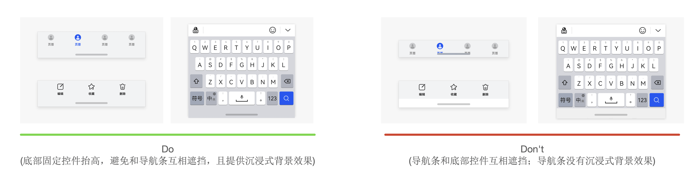
Multi-Window Interaction
When running in split screen, ensure that the app layout displays properly without abnormal elements.
The app supports split-screen ratio adjustment. Ensure that elements are not distorted or compressed when the ratio changes.
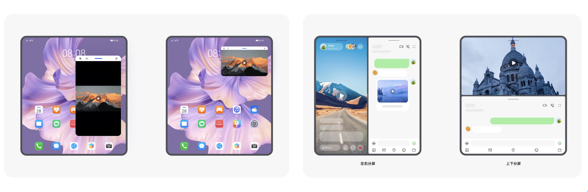
Dark Mode
The app must support dark mode. When the system switches to dark mode, the interface must use a dark style without usability issues caused by missing adaptation.
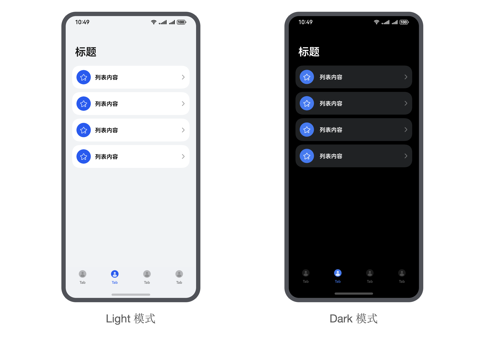